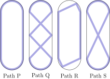

<!DOCTYPE html>
<html lang="zh-CN">
<head>
<meta charset="UTF-8">
<title>AMC 8 错题精讲 · 弧与弦的长短比较（放缩论证）</title>
<script>
window.MathJax = {
  tex: { inlineMath: [['$','$'],['\\(','\\)']], displayMath: [['$$','$$'],['\\[','\\]']] },
  svg: { fontCache: 'global' }
};
</script>
<script src="https://cdn.jsdelivr.net/npm/mathjax@3/es5/tex-svg.js"></script>
<style>
  :root{
    --ink:#1a2332; --sub:#5a6b80; --line:#e3e8ef; --accent:#2563eb;
    --accent-soft:#eff4ff; --warn:#b45309; --warn-soft:#fffbeb;
    --ok:#047857; --ok-soft:#ecfdf5; --code-bg:#f6f8fb;
  }
  *{box-sizing:border-box;}
  body{
    font-family:-apple-system,"PingFang SC","Microsoft YaHei",system-ui,sans-serif;
    color:var(--ink); line-height:1.75; margin:0; padding:0;
    background:#fff;
  }
  .page{max-width:820px; margin:0 auto; padding:56px 48px 80px;}
  .kicker{font-size:13px; letter-spacing:.14em; color:var(--accent); font-weight:700; text-transform:uppercase;}
  h1{font-size:30px; margin:8px 0 4px; letter-spacing:-.01em;}
  .lede{color:var(--sub); font-size:15px; margin:0 0 28px;}
  hr{border:none; border-top:1px solid var(--line); margin:36px 0;}
  h2{font-size:21px; margin:38px 0 14px; padding-left:12px; border-left:4px solid var(--accent);}
  h3{font-size:17px; margin:26px 0 10px; color:#243b53;}
  p{margin:10px 0;}
  blockquote{
    margin:18px 0; padding:14px 18px; background:var(--accent-soft);
    border-left:4px solid var(--accent); border-radius:0 8px 8px 0; font-size:15px;
  }
  .warn{background:var(--warn-soft); border-left-color:var(--warn);}
  .warn strong{color:var(--warn);}
  .ok{background:var(--ok-soft); border-left-color:var(--ok);}
  table{border-collapse:collapse; width:100%; margin:16px 0; font-size:14.5px;}
  th,td{border:1px solid var(--line); padding:9px 12px; text-align:left; vertical-align:top;}
  th{background:#f7f9fc; font-weight:600;}
  code{background:var(--code-bg); padding:2px 6px; border-radius:5px; font-family:"SF Mono",Menlo,Consolas,monospace; font-size:.9em;}
  .prob{border:1px solid var(--line); border-radius:12px; padding:18px 20px; margin:20px 0; background:#fff;}
  .prob .tag{display:inline-block; font-size:12px; font-weight:700; color:#fff; background:var(--accent);
    border-radius:20px; padding:3px 12px; margin-bottom:10px;}
  .prob .tag.t2{background:#7c3aed;} .prob .tag.t3{background:#0891b2;}
  .prob .tag.t4{background:#db2777;} .prob .tag.t5{background:#dc2626;}
  .stars{color:#f59e0b; letter-spacing:2px;}
  .prob .form{
    display:inline-block; font-size:12px; font-weight:600; color:var(--sub);
    background:#f1f5f9; border:1px solid var(--line); border-radius:6px;
    padding:2px 9px; margin-left:4px;
  }
  /* ---- 官方答案引用条（v2.6 起必填）---- */
  .official{
    margin:14px 0 0; padding:12px 16px; font-size:14px;
    background:#f7f9fc; border:1px solid var(--line); border-left:4px solid #64748b;
    border-radius:0 8px 8px 0; word-break:break-all;
  }
  .official a{color:var(--accent); font-weight:600; text-decoration:none;}
  .official a:hover{text-decoration:underline;}
  details{margin-top:14px; border-top:1px dashed var(--line); padding-top:12px;}
  summary{cursor:pointer; font-weight:600; color:var(--accent); font-size:14.5px;}
  details[open] summary{margin-bottom:8px;}
  .ans{background:#f0fdf4; border:1px solid #bbf7d0; border-radius:8px; padding:10px 14px; margin:10px 0;}
  .card{
    border:2px solid var(--accent); border-radius:14px; padding:20px 24px; margin:24px 0;
    background:linear-gradient(180deg,#f7faff,#fff);
  }
  .card h3{margin-top:0; color:var(--accent);}
  ol li,ul li{margin:6px 0;}
  .footer{margin-top:44px; color:var(--sub); font-size:13px; text-align:center; border-top:1px solid var(--line); padding-top:16px;}
  .hint{font-size:13.5px; color:var(--sub); font-style:italic;}
  .meta{
    margin:16px 0 6px; padding:12px 16px; background:#f7f9fc;
    border:1px solid var(--line); border-radius:10px;
    display:flex; flex-wrap:wrap; gap:8px 26px; font-size:14px;
  }
  .meta .item{display:flex; gap:6px; align-items:baseline;}
  .meta .k{color:var(--sub);}
  .meta .v{color:var(--ink); font-weight:600;}
  /* ---- 顶部返回导航 ---- */
  .topbar{
    position:sticky; top:0; z-index:20; margin:-56px -48px 24px;
    padding:12px 48px; background:rgba(255,255,255,.92);
    backdrop-filter:blur(8px); border-bottom:1px solid var(--line);
    display:flex; align-items:center; justify-content:space-between; gap:12px;
  }
  .back-home{
    display:inline-flex; align-items:center; gap:6px;
    padding:7px 14px; border-radius:8px; text-decoration:none;
    background:var(--accent); color:#fff; font-size:13.5px; font-weight:600;
    transition:opacity .15s;
  }
  .back-home:hover{opacity:.85;}
  .pager{display:flex; gap:8px;}
  .pager a{
    padding:7px 14px; border-radius:8px; text-decoration:none; font-size:13.5px; font-weight:600;
    border:1px solid var(--line); color:var(--sub); background:#fff;
  }
  .pager a.disabled{opacity:.35; pointer-events:none;}
  .pager a:hover{border-color:var(--accent); color:var(--accent);}
  /* ---- v2.9 done 勾选（练习完成状态） ---- */
  .prob .done{float:right; cursor:pointer; font-size:16px; font-weight:800; letter-spacing:.08em;
    color:#64748b; user-select:none; display:flex; align-items:center; gap:8px; margin-left:10px;}
  .prob .done input{width:19px; height:19px; accent-color:#16a34a; cursor:pointer;}
  .prob .done:hover{color:#16a34a;}
  .prob.is-done{border-color:#16a34a; background:#f0fdf4;}
  .prob.is-done .tag{box-shadow:0 0 0 2px #16a34a inset;}
  .done-progress{margin:14px 0 4px; padding:8px 14px; border:1px dashed #16a34a; border-radius:10px;
    font-size:13px; font-weight:700; color:#15803d; background:#f0fdf4; display:inline-block;}
  .done-progress.all-done{border-style:solid; background:#dcfce7;}
</style>
</head>
<body>
<div class="page">

  <nav class="topbar">
    <a class="back-home" href="../amc8/2024AMC8.html">← 返回 2024AMC8</a>
    <div class="pager">
      <a href="20261011-fraction-decimal-sum.html">‹ 上一题</a>
      <a href="20261011-coordinate-triangle-area.html">下一题 ›</a>
    </div>
  </nav>

  <div class="kicker">AMC 8 · 错题精讲</div>
  <h1>冰场四路径比长短：弦永远短于弧，交叉弦最多最长</h1>
  <div class="meta">
    <div class="item"><span class="k">日期：</span><span class="v">20261011</span></div>
    <div class="item"><span class="k">成员：</span><span class="v">YC</span></div>
    <div class="item"><span class="k">题目：</span><span class="v">2024AMC8(6)</span></div>
    <div class="item"><span class="k">知识点：</span><span class="v">Arc length and bounding arguments</span></div>
  </div>
  <p class="lede">四条路径都在同一个圆角矩形冰场里，长度差异全部来自两件事：<strong>用直线弦代替圆弧会变短</strong>（R 最短），<strong>在中部来回穿插会变长</strong>（Q 最长）。真正需要比较的只有 P 和 S：两者的差异集中在一个直角三角形里——<strong>斜边永远长于直角边</strong>，一步定胜负。</p>

  <hr>

  <h2>一、错题原题</h2>
  <blockquote>
    Sergei skated around an ice rink, gliding along different paths. The marked lines in the figures below show four of the paths labeled P, Q, R, and S. What is the sorted order of the four paths from shortest to longest?

  </blockquote>
  <p><strong>中文翻译</strong>：Sergei 在一个冰场四周滑行，沿不同路径前进。下图中的标记线画出了四条路径 P、Q、R、S。把这四条路径按<strong>从短到长</strong>排序，正确的是？
(A) P, Q, R, S　(B) P, R, S, Q　(C) Q, S, P, R　(D) R, P, S, Q　(E) R, S, P, Q</p>
  <!-- v2.6 起必填：官方答案条。URL 规则见 SKILL.md 第 3.1 节；撰写前必须先核对官方答案 -->
  <p class="official">
    📌 <strong>官方答案（LIVE by Po-Shen Loh）</strong>：
    <a href="https://live.poshenloh.com/past-contests/amc8/2024/problem/6" target="_blank" rel="noopener">https://live.poshenloh.com/past-contests/amc8/2024/problem/6</a><br>
    官方给出的正确选项为 <strong>(D) R, P, S, Q</strong>，本站解析与之一致。
  </p>

  <hr>

  <h2>二、错误原因诊断</h2>
  <table>
    <tr><th>常见错误</th><th>错在哪</th></tr>
    <tr><td><code>答 (B) P, R, S, Q</code></td><td>把 P 和 R 的关系看反了。P 是贴着<strong>完整边界</strong>（含四个圆弧弯）走的，R 是把四个圆弧弯<strong>换成直线切角</strong>走的。两点之间线段最短，每个圆弧弯都被它所对的弦替换，所以 R 必然短于 P。看反的人多半被 R 图中「斜着走的线显得很长」的视觉印象骗了——斜线在纸上显得张扬，但它们包住的整体反而更紧凑。</td></tr>
    <tr><td><code>答 (E) R, S, P, Q</code></td><td>P 与 S 的比较做错。S 的中部是一条<strong>横穿冰场的对角线</strong>加上下两端的圆弧弯；P 的中部是冰场的<strong>两条直边</strong>。把两者的差异隔离出来：它们共享圆弧端，差别只在「对角线 vs 直边」，而这条对角线和直边恰好构成一个直角三角形的斜边与直角边——<strong>斜边 &gt; 直角边</strong>，所以 S &gt; P。选 (E) 的人把这个直角三角形看丢了，凭「P 看起来绕得更远」的直觉排了序。</td></tr>
    <!-- 按需增删行 -->
  </table>
  <blockquote class="warn">
    <strong>根本问题</strong>：没有把四条路径的差异<strong>隔离成可比的局部</strong>。四条路径的端点圆弧段大部分相同，真正不同的只有「圆弧 vs 切线弦」（决定 R 最短）和「中部穿越方式」（决定 Q 最长、S &gt; P）。逐对隔离差异、把每对差异塞进一个「弦 vs 弧」或「斜边 vs 直角边」的标准比较里，就根本不需要精确计算任何长度。
  </blockquote>

  <hr>

  <h2>三、正确解法</h2>
  <h3>方法一：逐对隔离差异 + 标准不等式（官方思路，推荐）</h3>
  <p class="hint">✅ <strong>与官方解法同源</strong>：本页方案一的主线直接采用 <a href="https://live.poshenloh.com/past-contests/amc8/2024/problem/6" target="_blank" rel="noopener">官方书面解答</a> 的思路，官方因篇幅省略的中间推理（以及背后的「为什么」）由本站补全，两者结论完全一致。</p>
    <p><strong>第 1 步 · R 为什么最短。</strong>R 在四个圆角处用<strong>直线切角</strong>（弦）代替了圆弧弯。连接两点的所有曲线中<strong>线段最短</strong>，所以每个角上「弦 &lt; 弧」。其余部分 R 与边界路径相同或更短，因此 R 短于所有走边界的路径。</p>
    <p><strong>第 2 步 · Q 为什么最长。</strong>Q 走完整边界，并且在中部来回穿插（两度横穿冰场）。每一段穿插都是「从边界出发又回到边界」的额外行程，且穿插线本身比被它替代的直边更长（同样含斜边成分），所以 Q 比 P 长出一大截，是四条中最长的。</p>
    <p><strong>第 3 步 · P 与 S 之争：一个直角三角形定胜负。</strong>S 与 P 的圆弧端完全相同，差异只剩中部：S 的中部经过一条<strong>横穿的对角线</strong>，P 的中部对应的是冰场的<strong>直边</strong>。这条对角线与这条直边、以及冰场的短边一起，构成一个直角三角形——对角线是<strong>斜边</strong>，直边是<strong>直角边</strong>。直角三角形斜边大于任一直角边，故</p>
    $$\text{S 的中部穿越段} > \text{P 的对应直边}\quad\Longrightarrow\quad S > P.$$
    <p><strong>第 4 步 · 汇总。</strong></p>
    $$R \;<\; P \;<\; S \;<\; Q.$$
    <blockquote class="ok"><strong>答案：(D) R, P, S, Q</strong>。</blockquote>
  <h3>方法二：参数化数值验证</h3>
  设冰场是宽 $2r$、直段长 $h$ 的圆角矩形（圆角半径 $r$）。取 $h=16,\ r=3$ 代入四条路径的组成：
    <ul>
      <li>$P = 2h + 2\pi r = 32 + 6\pi \approx 50.85$（两条直边 + 两个半圆弧）；</li>
      <li>$R = 2h + 4\cdot r\sqrt2 \approx 32 + 16.97 = 48.97$（每角弦长 $r\sqrt2$ 替代 $\frac{\pi r}2$ 弧）；</li>
      <li>$S = P - 2h + 2\sqrt{h^2+(2r)^2} \approx 50.85-32+2\cdot17=53.0$（直边换成两条对角线）；</li>
      <li>$Q = P - 2h + 4\sqrt{h^2+(2r)^2} \approx 87.2$（换成四条对角线）。</li>
    </ul>
    数值上 $48.97 < 50.85 < 53.0 < 87.2$，与方法一的 $R<P<S<Q$ 完全一致。数值路只当<strong>验算</strong>用——考场上没有计算器，方法一的三句不等式才是正解。
  <blockquote class="ok">
    <strong>验证技巧</strong>：① 用几何画板/Python 参数化按方法二的公式重算，排序不变；② 极限夹逼：把圆角半径 $r$ 压到 0（冰场退化为矩形），P 与 R 的差趋于 0 但恒有 $R\le P$；把 $r$ 放大，弧比弦长得更多，$R<P$ 始终成立。③ 自检第 3 步：对角线与直边、短边构成直角三角形这一步，可以直接在图上标出三点验证。
  </blockquote>

  <hr>

  <h2>四、知识内核提炼</h2>
  <blockquote>
    <strong>核心知识点</strong>：两条真实存在的比较原理（都不需要记名字）：<strong>① 两点之间线段最短</strong>——所以任何用弦替代弧的操作都让路径变短；<strong>② 直角三角形斜边大于直角边</strong>——所以「斜穿」永远比「沿边走」长。本题所有比较都是这两条的直接推论，配合「逐对隔离差异」的策略即可，无需任何长度公式。
  </blockquote>
  <p>必须掌握的要点：</p>
  <ol>
    <li><strong>弦 &lt; 弧</strong>：同一对端点，圆弧比所对的弦长。这是「两点之间线段最短」的特例。R 正是把四个弧弯换成弦，才拿下最短。</li>
    <li><strong>斜边 &gt; 直角边</strong>：S 中部的对角线和 P 对应的直边恰好是同一个直角三角形的斜边与直角边——找到这个三角形，是全题唯一需要「看出来」的一步。</li>
    <li><strong>逐对隔离差异</strong>：比较两条复杂路径时，找它们<strong>相同的部分</strong>并整体划掉，只比较不同的部分。本题四条路径共享圆弧端点，划掉之后只剩三个局部比较。</li>
    <li><strong>极限夹逼验证</strong>：拿不准时把参数推到极端（圆角半径 → 0 或 → 极大）看排序是否翻转。若极端情形下排序都不翻转，中段就更不会翻转——这是一种不依赖计算的可信检验。</li>
  </ol>

  <hr>

  <h2>五、举一反三：5 道进阶练习（由易到难 · 形式各异）</h2>

  <div class="prob">
    <span class="tag">第 1 题 · 弦与弧的定量比较</span> <span class="stars">★</span> <span class="form">形式｜数值计算 + 比较</span>
    <p>半径为 $2$ 的圆中，比较「$60^\circ$ 圆心角所对的弧长」与「该弧所对弦长的 $2$ 倍」哪个更长，精确到 0.01。</p>
    <details>
      <summary>👉 点击查看解析</summary>
      <div class="ans">答：<strong>弧长 $\approx2.09$ &lt; 弦长的 2 倍 $=4$</strong></div>
      <p>$60^\circ$ 弧长 $=2\pi\cdot\frac{60}{360}=\frac{2\pi}{3}\approx2.094$。弦长 $=2\cdot2\sin30^\circ=2$，其 2 倍为 $4$。弧长明显更短——注意这里是「弧 vs 两倍弦」，两倍弦其实已经跨越了整条直径。若只比「弧 vs 弦」：$2.094>2$，弧长于弦，与「线段最短」一致。</p>
      <p class="hint">要点：弧永远长于它自己那根弦；但把弦翻倍后比较对象就变了——看清比较的两方各是什么再动手。</p>
    </details>
  </div>

  <div class="prob">
    <span class="tag t2">第 2 题 · 换构型参数</span> <span class="stars">★★</span> <span class="form">形式｜换构型参数</span>
    <p>把等边三角形（边长 $s$）的每条边换成<strong>向外凸起、圆心角 $120^\circ$ 的圆弧</strong>，得到一个「圆弧三角形」。它的周长是 $3s$ 的多少倍？精确到 0.01。</p>
    <details>
      <summary>👉 点击查看解析</summary>
      <div class="ans">答：<strong>约 $3.63$ 倍（每条弧 $\approx1.209s$）</strong></div>
      <p>弦长 $s$、圆心角 $120^\circ$ 的弧，半径 $R=\dfrac{s}{2\sin60^\circ}=\dfrac{s}{\sqrt3}$，弧长 $=R\cdot\dfrac{2\pi}{3}=\dfrac{2\pi s}{3\sqrt3}\approx1.2092s$。三条弧共 $\approx3.6276s$，是 $3s$ 的 $\dfrac{2\pi}{3\sqrt3}\approx1.21$ 倍……准确说周长与 $3s$ 之比为 $\dfrac{2\pi}{3\sqrt3}\approx1.209$，即周长约为 $3s$ 的 $1.21$ 倍。向外凸的弧比弦长——这正是官方路径图中「走弧线的边比走直线的边费路程」的定量版本。</p>
      <p class="hint">要点：弦换弧必然变长；倍率由圆心角决定：$\dfrac{\text{弧}}{\text{弦}}=\dfrac{\theta}{2\sin(\theta/2)}$（$\theta$ 为弧度），$\theta$ 越大偏离 1 越远。</p>
    </details>
  </div>

  <div class="prob">
    <span class="tag t3">第 3 题 · 排序比较</span> <span class="stars">★★★</span> <span class="form">形式｜完整排序</span>
    <p>半径为 2 的圆中，把下面三个量从小到大排序：甲 = $60^\circ$ 弧长；乙 = $60^\circ$ 弦长；丙 = 圆内接正三角形的边长。</p>
    <details>
      <summary>👉 点击查看解析</summary>
      <div class="ans">答：<strong>乙 &lt; 甲 &lt; 丙</strong></div>
      <p>乙 = $2\cdot2\sin30^\circ=2$。甲 = $\frac{2\pi}3\approx2.094$。丙：内接正三角形边长 $=2\cdot2\sin60^\circ=2\sqrt3\approx3.464$。所以 $2<2.094<3.464$，乙 &lt; 甲 &lt; 丙。乙与甲的关系就是「弦 &lt; 弧」；丙比甲大是因为正三角形的边对着的圆心角是 $120^\circ$，弧更弯、弦更长。</p>
      <p class="hint">要点：圆中「圆心角 → 弦长」由 $2R\sin\frac\theta2$ 一手包办：$\theta$ 越大弦越长，而弧长按 $\theta$ 线性增长，两者只在 $\theta$ 小时接近。</p>
    </details>
  </div>

  <div class="prob">
    <span class="tag t4">第 4 题 · 数值计算</span> <span class="stars">★★★★</span> <span class="form">形式｜代入求值</span>
    <p>冰场为直段长 $10$、圆角半径 $2$ 的圆角矩形。求「沿完整边界一周」（路径 P 型）与「四角全用直线切过去」（路径 R 型）的长度之差，精确到 0.01。</p>
    <details>
      <summary>👉 点击查看解析</summary>
      <div class="ans">答：<strong>$4\pi-8\sqrt2\approx1.25$</strong></div>
      <p>P 型 $=2\cdot10+2\pi\cdot2=20+4\pi$。R 型 $=20+4\cdot(2\sqrt2)=20+8\sqrt2$（每角的弦连接两个切点，长 $2\cdot2\sin45^\circ\cdot\ldots$——切点间距 $=r\sqrt2=2\sqrt2$）。差 $=4\pi-8\sqrt2\approx12.566-11.314=1.25$。也就是说四个圆角每处只省约 0.31——省得不多，但方向永远一致。</p>
      <p class="hint">要点：每个圆角省下的量 =（半圆弧 $\pi r$）−（弦 $r\sqrt2$）$=r(\pi-\sqrt2)$，四个角合计 $4r(\pi-\sqrt2)$；代 $r=2$ 得 $8(\pi-\sqrt2)$？注意切角弦长是 $r\sqrt2$ 而不是 $2r\sin45^\circ\times2$——前者才是两切点间距，别混。</p>
    </details>
  </div>

  <div class="prob">
    <span class="tag t5">第 5 题 · 一般化证明</span> <span class="stars">★★★★★</span> <span class="form">形式｜一般化 + 证明</span>
    <p>证明：连接同一对端点的任何连续曲线的长度不小于两点间的直线距离；并由此推论——同一圆中弧长不小于弦长，等号何时成立？</p>
    <details>
      <summary>👉 点击查看解析</summary>
      <div class="ans">答：<strong>曲线长 ≥ 直线距离；弧 ≥ 弦，等号仅当曲线（弧）退化为线段本身</strong></div>
      <p>把曲线看成由足够多的小段直线首尾相接的折线逼近（这正是「曲线长度」的定义方式）。折线总长等于各小段之和；而对每一小段，其两端点间的直线距离不超过这一小段本身（三角形不等式），于是
    $$\text{曲线长}=\sum\text{小段长}\;\ge\;\sum\text{各段端点直线距}\;\ge\;\text{首端到末端的直线距离}.$$
    最后一步是把中间点逐个用三角形不等式「抄近路」缩掉。取该曲线为圆上的一段弧：用弦把弧切成小段，同样的论证给出弧长 ≥ 弦长。等号要求每一步「抄近路」都没损失，即所有小段都在同一条直线上——也就是曲线本身就是那条线段。因此<strong>等号仅当弧退化为弦</strong>（圆退化时），正常圆弧永远严格更长。</p>
      <p class="hint">要点：「线段最短」不是经验，是三角形不等式的逐段累加；这一条原理吃透，「弦代弧变短」「切角变短」全部免费到手。</p>
    </details>
  </div>

  <hr>

  <h2>六、方法总结卡片（贴在错题本上）</h2>
  <div class="card">
    <h3>考场 30 秒决策卡</h3>
    <ol>
      <li>先扫四条路径找「全同段」：圆弧端点全一样 → 划掉，只比差异段。</li>
      <li>三个差异各配一条标准不等式：弧换弦 → 变短（R）；来回穿插 → 变长（Q）；斜边 vs 直角边 → S &gt; P。</li>
      <li>拼出 R &lt; P &lt; S &lt; Q，对照选项 (D)。不必算任何具体长度。</li>
    </ol>
    <p style="text-align:center; font-weight:700; color:var(--accent); margin-bottom:0;">
      口诀：「切角变短、穿插变长、斜边压直边」——三句话排完四条路。
    </p>
  </div>

  <div class="footer">
    <a class="back-home" href="../index.html" style="margin-bottom:14px;">← 返回题库首页</a>
    <div>AMC 8 错题精讲 · 弧与弦的长短比较（放缩论证） &nbsp;|&nbsp; 生成于 2026-10-12</div>
  </div>
</div>
<script id="done-progress-js">
/* v2.9 练习题 done 勾选：localStorage 按 pathname+题序持久化，无后端依赖 */
(function(){
  var probs = Array.prototype.slice.call(document.querySelectorAll('.prob'));
  if(!probs.length) return;
  var KEY = 'amc-done:' + location.pathname;
  var state = {};
  try{ state = JSON.parse(localStorage.getItem(KEY) || '{}'); }catch(e){ state = {}; }
  function save(){ try{ localStorage.setItem(KEY, JSON.stringify(state)); }catch(e){} }
  var bar = document.createElement('div');
  bar.className = 'done-progress';
  function refresh(){
    var n = probs.filter(function(p){ return p.classList.contains('is-done'); }).length;
    bar.textContent = '✅ 完成进度：' + n + ' / ' + probs.length;
    bar.classList.toggle('all-done', n === probs.length);
  }
  probs.forEach(function(p, i){
    var lab = document.createElement('label');
    lab.className = 'done';
    var cb = document.createElement('input');
    cb.type = 'checkbox';
    cb.checked = !!state[i];
    lab.appendChild(cb);
    lab.appendChild(document.createTextNode(' DONE'));
    p.insertBefore(lab, p.firstChild);
    cb.addEventListener('change', function(){
      p.classList.toggle('is-done', cb.checked);
      if(cb.checked){ state[i] = 1; } else { delete state[i]; }
      save(); refresh();
    });
    p.classList.toggle('is-done', cb.checked);
  });
  var h2s = document.querySelectorAll('h2'), sec = null;
  for(var k = 0; k < h2s.length; k++){
    if(h2s[k].textContent.indexOf('举一反三') > -1){ sec = h2s[k]; break; }
  }
  if(sec && sec.parentNode) sec.parentNode.insertBefore(bar, sec.nextSibling);
  else document.querySelector('.page').appendChild(bar);
  refresh();
})();
</script>
</body>
</html>
